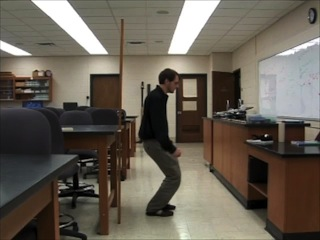

landing-short.mp4
A person jumps from a table and lands on the floor. From his motion, the force by the floor on the person can be calculated. In this video, his knees bend a small amount upon landing.
recording speed: 30fps
topic: Newton's second law; acceleration; force
video credit: Aaron Titus